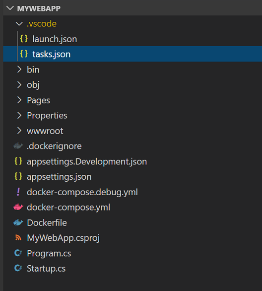
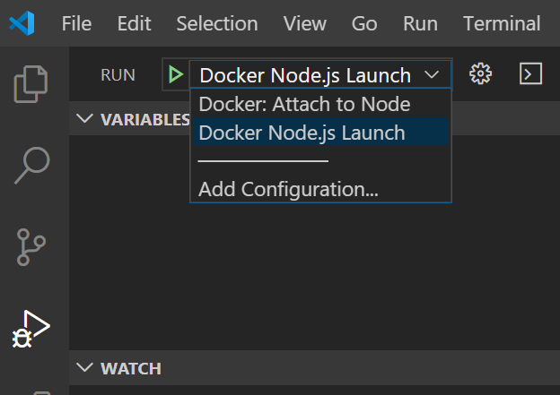
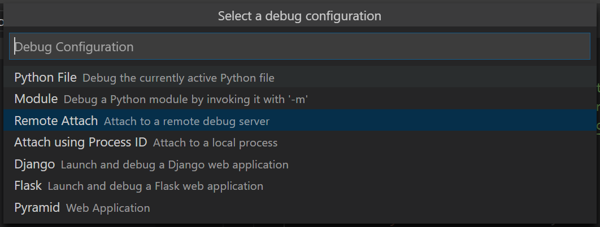
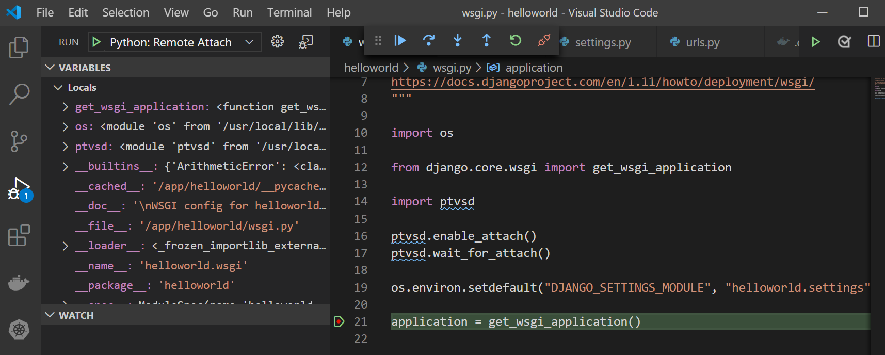
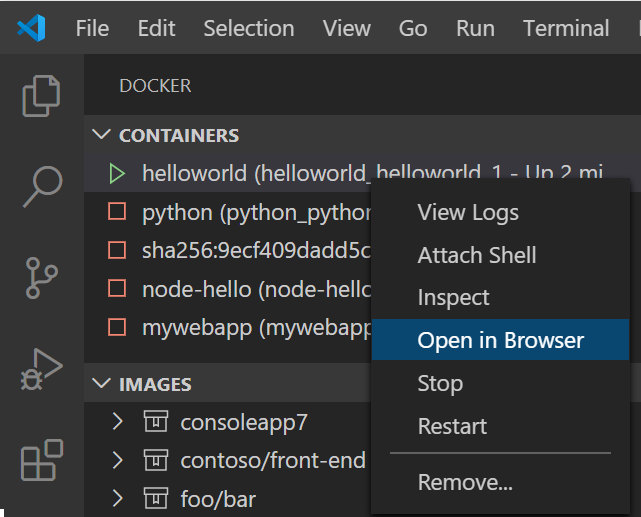
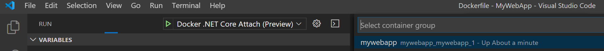
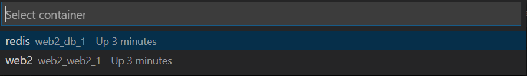
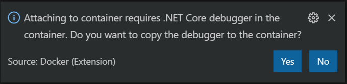
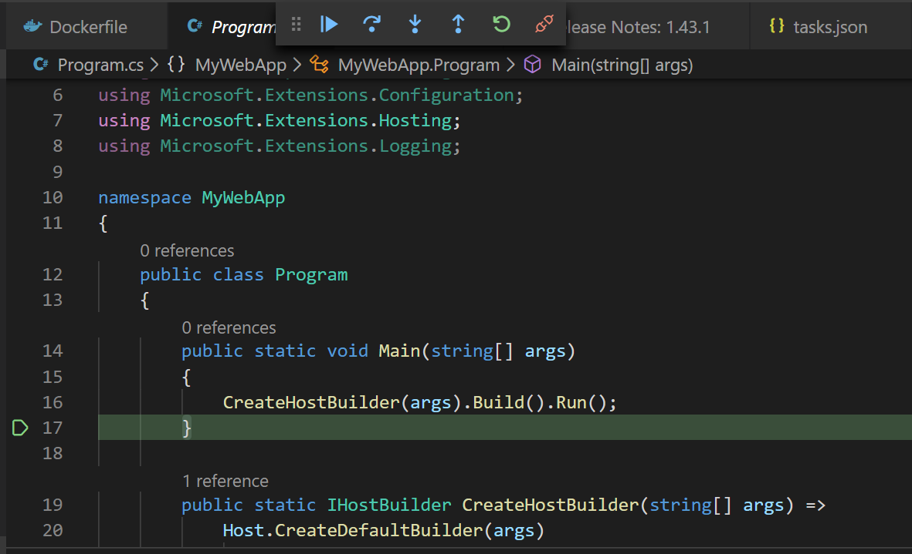

Use Docker Compose
Docker Compose provides a way to orchestrate multiple containers that work together. Examples include a service that processes requests and a front-end web site, or a service that uses a supporting function such as a Redis cache. If you are using the microservices model for your app development, you can use Docker Compose to factor the app code into several independently running services that communicate using web requests. This article helps you enable Docker Compose for your apps, whether they are Node.js, Python, or .NET Core, and also helps you configure debugging in Visual Studio Code for these scenarios.
Also, for single-container scenarios, using Docker Compose provides tool-independent configuration in a way that a single Dockerfile does not. Configuration settings such as volume mounts for the container, port mappings, and environment variables can be declared in the docker-compose YML files.
To use Docker Compose in VS Code using the Docker extension, you should already be familiar with the basics of Docker Compose.
Adding Docker Compose support to your project
If you already have one or more Dockerfiles, you can add Docker Compose files by opening the Command Palette (kb(workbench.action.showCommands)), and using the Docker: Add Docker Compose Files to Workspace command. Follow the prompts.
You can add Docker Compose files to your workspace at the same time you add a Dockerfile by opening the Command Palette (kb(workbench.action.showCommands)) and using the Docker: Add Docker Files to Workspace command. You'll be asked if you want to add Docker Compose files. If you want to keep your existing Dockerfile, choose No when prompted to overwrite the Dockerfile.
The Docker extension adds the docker-compose.yml file to your workspace. This file contains the configuration to bring up the containers as expected in production. In some cases, a docker-compose.debug.yml is also generated. This file provides a simplified mode for starting that enables the debugger.

The VS Code Docker extension generates files that work out of the box, but you can also customize them to optimize for your scenario. You can then use the Docker Compose Up command (right-click on the docker-compose.yml file, or find the command in the Command Palette) to get everything started at once. You can also use the docker-compose up command from the command prompt or terminal window in VS Code to start the containers. Refer to the Docker Compose documentation about how to configure the Docker Compose behavior and what command-line options are available.
With the docker-compose files, you can now specify port mappings in the docker-compose files, rather than in the .json configuration files. For examples, see the Docker Compose documentation.
Tip: When using Docker Compose, don't specify a host port. Instead, let the Docker pick a random available port to automatically avoid port conflict issues.
Add new containers to your projects
If you want to add another app or service, you can run Add Docker Compose Files to Workspace again, and choose to overwrite the existing docker-compose files, but you'll lose any customization in those files. If you want to preserve changes to the compose files, you can manually modify the docker-compose.yml file to add the new service. Typically, you can cut and paste the existing service section and change the names as appropriate for the new service.
You can run the Add Docker Files to Workspace command again to generate the Dockerfile for a new app. While each app or service has its own Dockerfile, there's typically one docker-compose.yml and one docker-compose.debug.yml file per workspace.
In Python projects, you have the Dockerfile, .dockerignore, docker-compose*.yml files all in the root folder of the workspace. When you add another app or service, move the Dockerfile into the app's folder.
In Node.js projects, the Dockerfile and .dockerignore files will be next to the package.json for that service.
For .NET, the folder structure is already set up to handle multiple projects when you create the Docker Compose files, .dockerignore and docker-compose*.yml are placed in the workspace root (for example, if the project is in src/project1, then the files are in src), so when you add another service, you create another project in a folder, say project2, and recreate or modify the docker-compose files as described previously.
Debug
First, refer to the debugging documentation for your target platform, to understand the basics on debugging in containers with VS Code:
If you want to debug in Docker Compose, run the command Docker Compose Up using one of the two Docker Compose files as described in the previous section, and then attach using the appropriate Attach launch configuration. Launching directly using the normal launch configuration does not use Docker Compose.
Create an Attach launch configuration. This is a section in launch.json. The process is mostly manual, but in some cases, the Docker extension can help by adding a pre-configured launch configuration that you can use as a template and customize. The process for each platform (Node.js, Python, and .NET Core) is described in the following sections.
Node.js
On the Debug tab, choose the Configuration dropdown, choose New Configuration and select the
Docker Attachconfiguration template Node.js Docker Attach (Preview).Configure the debugging port in
docker-compose.debug.yml. This is set when you create the file, so you might not need to change it. In the example below, port 9229 is used for debugging on both the host and the container.version: '3.4' services: node-hello: image: node-hello build: . environment: NODE_ENV: development ports: - 3000 - 9229:9229 command: node --inspect=0.0.0.0:9229 ./bin/wwwIf you have multiple apps, you need to change the port for one of them, so that each app has a unique port. You can point to the right debugging port in the
launch.json, and save the file. If you omit this, the port will be chosen automatically.Here's an example that shows the Node.js launch configuration - Attach:
"configurations": [ { "type": "node", "request": "attach", "name": "Docker: Attach to Node", "remoteRoot": "/usr/src/app", "port": 9229 // Optional; otherwise inferred from the docker-compose.debug.yml. }, // ... ]When done editing the Attach configuration, save
launch.json, and select your new launch configuration as the active configuration. In the Debug tab, find the new configuration in the Configuration dropdown.
Right-click on the
docker-compose.debug.ymlfile and choose Compose Up.When you attach to a service that exposes an HTTP endpoint that returns HTML, the web browser doesn't open automatically. To open the app in the browser, choose the container in the sidebar, right-click and choose Open in Browser. If multiple ports are configured, you'll be asked to choose the port.
Launch the debugger in the usual way. From the Debug tab, choose the green arrow (Start button) or use
kb(workbench.action.debug.start).
Python
For debugging Python with Docker Compose, follow these steps:
On the Debug tab, choose the Configuration dropdown, choose New Configuration, choose Python, and select the
Remote Attachconfiguration template.
You'll be prompted to choose the host machine (for example, localhost) and port you want to use for debugging. The default debugging port for Python is 5678. If you have multiple apps, you need to change the port for one of them, so that each app has a unique port. You can point to the right debugging port in the
launch.json, and save the file. If you omit this, the port will be chosen automatically."configurations": [ { "name": "Python: Remote Attach", "type": "python", "request": "attach", "port": 5678, "host": "localhost", "pathMappings": [ { "localRoot": "${workspaceFolder}", "remoteRoot": "/app" } ] }When done editing the Attach configuration, save the
launch.json. Navigate to the Debug tab and select Python: Remote Attach as the active configuration.If you already have a valid Dockerfile, we recommend running the command Docker: Add Docker Compose Files to Workspace. This will create a
docker-compose.ymlfile and also adocker-compose.debug.yml, which volume maps and starts the Python debugger in the container. If you do not have a Dockerfile already, we recommend running Docker: Add Docker Files to Workspace and selecting Yes to include Docker Compose files.Note: By default, when using Docker: Add Docker Files to Workspace, choosing the Django and Flask options will scaffold a Dockerfile configured for Gunicorn. Follow the instructions in the Python in a container quickstart to ensure it is configured properly before proceeding.
Right-click on the
docker-compose.debug.ymlfile (example shown below) and choose Compose Up.version: '3.4' services: pythonsamplevscodedjangotutorial: image: pythonsamplevscodedjangotutorial build: context: . dockerfile: ./Dockerfile command: ["sh", "-c", "pip install debugpy -t /tmp && python /tmp/debugpy --wait-for-client --listen 0.0.0.0:5678 manage.py runserver 0.0.0.0:8000 --nothreading --noreload"] ports: - 8000:8000 - 5678:5678Once your container is built and running, attach the debugger by hitting
kb(workbench.action.debug.start)with the Python: Remote Attach launch configuration selected.
Note: If you would like to import the Python debugger into a specific file, more information can be found in the debugpy README.
When you attach to a service that exposes an HTTP endpoint and returns HTML, the web browser may not open automatically. To open the app in the browser, right-click the container in the Docker Explorer and choose Open in Browser. If multiple ports are configured, you'll be asked to choose the port.

You're now debugging your running app in the container.
.NET
On the Debug tab, choose the Configuration dropdown, choose New Configuration and select the
Docker Attachconfiguration template .NET Core Docker Attach (Preview).VS Code tries to copy
vsdbgfrom the host machine to the target container using a default path. You can also provide a path to an existing instance ofvsdbgin the Attach configuration."netCore": { "debuggerPath": "/remote_debugger/vsdbg" }When done editing the Attach configuration, save
launch.json, and select your new launch configuration as the active configuration. In the Debug tab, find the new configuration in the Configuration dropdown.Right-click on the
docker-compose.debug.ymlfile and choose Compose Up.When you attach to a service that exposes an HTTP endpoint that returns HTML, the web browser doesn't open automatically. To open the app in the browser, choose the container in the sidebar, right-click and choose Open in Browser. If multiple ports are configured, you'll be asked to choose the port.
Launch the debugger in the usual way. From the Debug tab, choose the green arrow (Start button) or use
kb(workbench.action.debug.start).
If you try to attach to a .NET Core app running in a container, you'll see a prompt ask to select your app's container.

To skip this step, specify the container name in the Attach configuration in launch.json:
"containerName": "Your ContainerName"Next, you're asked if you want to copy the debugger (
vsdbg) into the container. Choose Yes.
If everything is configured correctly, the debugger should be attached to your .NET Core app.

Volume mounts
By default, the Docker extension does not do any volume mounting for debugging components. There's no need for it in .NET Core or Node.js, since the required components are built into the runtime. If your app requires volume mounts, specify them by using the volumes tag in the docker-compose*.yml files.
volumes:
- /host-folder-path:/container-folder-path
Docker Compose with multiple Compose files
Workspaces can have multiple docker-compose files to handle different environments like development, test, and production. The content of the configuration can be split into multiple files. For example, a base compose file that defines the common information for all environments and separate override files that define environment-specific information. When these files are passed as input to the docker-compose command, it combines these files into a single configuration. By default, the Docker: Compose Up command passes a single file as input to the compose command, but you can customize the compose up command to pass in multiple files using command customization. Or, you can use a custom task to invoke the docker-compose command with the desired parameters.
Note: If your workspace has
docker-compose.ymlanddocker-compose.override.ymland no other compose files, then thedocker-composecommand is invoked with no input files and it implicitly uses these files. In this case, no customization is needed.
Command customization
Command customization provides various ways to customize the compose up command based on your requirements. The following are few sample command customization for the compose up command.
Base file and an override file
Let's assume your workspace has a base compose file (docker-compose.yml) and an override file for each environment (docker-compose.dev.yml, docker-compose.test.yml and docker-compose.prod.yml) and you always compose up with the base file and an override file. In this case, the compose up command can be customized as in the following example. When the compose up command is invoked, the ${configurationFile} is replaced by the selected file.
"docker.commands.composeUp": [
{
"label": "override",
"template": "docker-compose -f docker-compose.yml ${configurationFile} up -d --build",
}
]
Template matching
Let's assume you have different set of input files for each environment. You could define multiple templates with regular expression match, and the selected file name will be matched against this match property and the corresponding template will be used.
"docker.commands.composeUp": [
{
"label": "dev-match",
"template": "docker-compose -f docker-compose.yml -f docker-compose.debug.yml -f docker-compose.dev.yml up -d --build",
"match": "dev"
},
{
"label": "test-match",
"template": "docker-compose -f docker-compose.yml -f docker-compose.debug.yml -f docker-compose.test.yml up -d --build",
"match": "test"
},
{
"label": "prod-match",
"template": "docker-compose -f docker-compose.yml -f docker-compose.release.yml -f docker-compose.prod.yml up -d --build",
"match": "prod"
}
]
Pick a template when the command is invoked
If you omit the match property from command templates, you will be asked which template to use each time compose up command is invoked. For example:
"docker.commands.composeUp": [
{
"label": "dev",
"template": "docker-compose -f docker-compose.yml -f docker-compose.common.dev.yml ${configurationFile} up -d --build"
},
{
"label": "test",
"template": "docker-compose -f docker-compose.yml -f docker-compose.common.test.yml ${configurationFile} up -d --build"
},
{
"label": "prod",
"template": "docker-compose -f docker-compose.yml -f docker-compose.common.prod.yml ${configurationFile} up -d --build"
},
],
Custom tasks
Rather than use command customization, you can also define a task like the following to invoke a docker-compose command. Please refer custom task for more detail on this.
{
"type": "shell",
"label": "compose-up-dev",
"command": "docker-compose -f docker-compose.yml -f docker-compose.Common.yml -f docker-compose.dev.yml up -d --build",
"presentation": {
"reveal": "always",
"panel": "new"
}
}